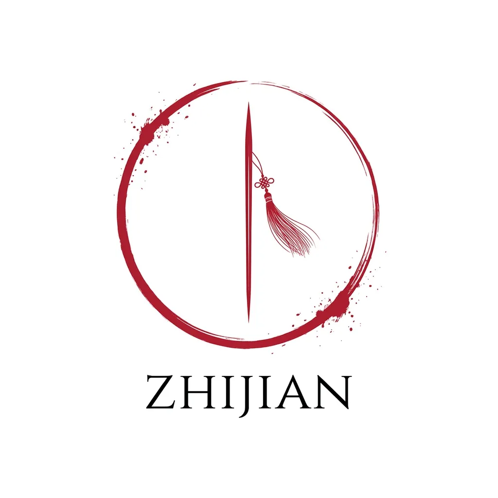
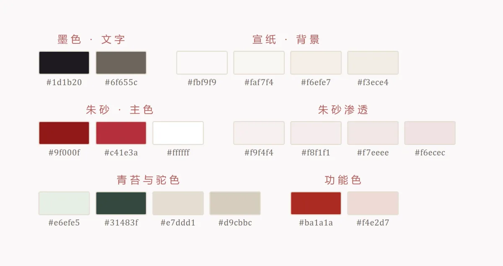
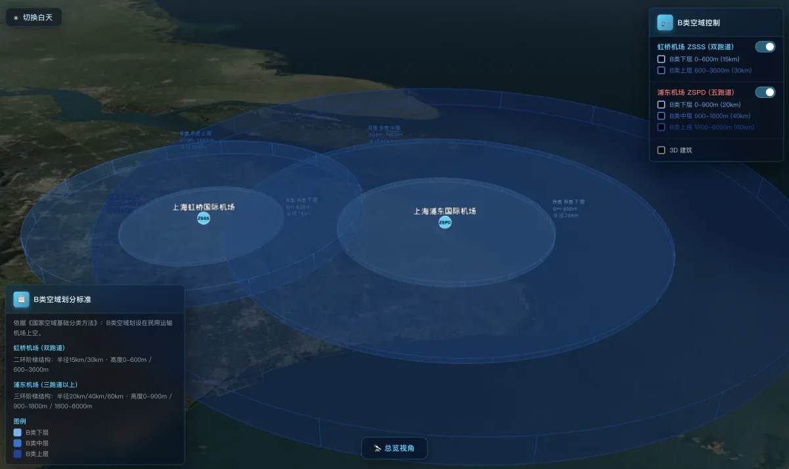

前端开发 · 全栈 · 简约设计 · 造物
写代码，也写文字；喜欢简洁的设计，追求美好的事物；一切在这里记录。
喜欢简洁的设计，也喜欢安静地写点代码。偶尔捣鼓些小工具，把一闪而过的想法变成看得见的东西。这里没有宏大的叙事，只有一些零散的记录和简单的快乐。

颜色不写死在任何组件里。朱砂、宣纸、墨色三层语义变量往下铺，换主题时整页跟着换，组件一行不改。
首屏不靠一张设计稿。标题、副标、细边按钮全用代码摆出来，换主题时整页跟着换。

把二维的航线剖面搬到三维地球上。几层空域叠在一起，线框必须够淡，不然整片天都糊了。
知简 - 极简个人站点，博客写作、导航书签与后台管理，追求简洁与实用。
Cesium 三维地球示例集，涵盖地图加载、模型渲染与空间数据可视化。